Diurnal Pattern of Reaction Time
My final Statistical Report can be found here
Overview
The course of study of time-of-day effects on reaction time has not been an easy one to chart, with many findings that seem to be in opposition. This review examines the individual differences of reaction time regarding time-of-day effects. Other possible confounding variables and procedures in testing time-of-day effects are also briefly examined. Thirty-nine participants measured their reaction time four times a day for two days. The results show a diurnal pattern of reaction time, with lower values during evening and night (17:00-05:00 hours). Linear mixed-model regression analysis of mean reaction time yielded mean Samn-Perelli Fatigue Scale, illness as predictors of reaction time. It was concluded that reaction time is strongly associated with time of day, fatigue scale and being ill.
Exploratory Data Analysis
Loading
Let us begin the EDA by loading the library:
library(Hmisc)## Warning: package 'Hmisc' was built under R version 3.6.3## Loading required package: lattice##
## Attaching package: 'lattice'## The following object is masked from 'package:boot':
##
## melanoma## Loading required package: survival##
## Attaching package: 'survival'## The following object is masked from 'package:boot':
##
## aml## Loading required package: Formula## Warning: package 'Formula' was built under R version 3.6.3## Loading required package: ggplot2## Warning: package 'ggplot2' was built under R version 3.6.3##
## Attaching package: 'Hmisc'## The following object is masked from 'package:quantmod':
##
## Lag## The following objects are masked from 'package:base':
##
## format.pval, unitslibrary(funModeling) ## Warning: package 'funModeling' was built under R version 3.6.3## funModeling v.1.9.4 :)
## Examples and tutorials at livebook.datascienceheroes.com
## / Now in Spanish: librovivodecienciadedatos.ailibrary(tidyverse)## Warning: package 'tidyverse' was built under R version 3.6.3## -- Attaching packages --------------------------------------- tidyverse 1.3.0 --## v tibble 3.0.4 v dplyr 1.0.2
## v tidyr 1.1.2 v stringr 1.4.0
## v readr 1.4.0 v forcats 0.5.0
## v purrr 0.3.4## Warning: package 'tibble' was built under R version 3.6.3## Warning: package 'tidyr' was built under R version 3.6.3## Warning: package 'readr' was built under R version 3.6.3## Warning: package 'purrr' was built under R version 3.6.3## Warning: package 'dplyr' was built under R version 3.6.3## Warning: package 'stringr' was built under R version 3.6.3## Warning: package 'forcats' was built under R version 3.6.3## -- Conflicts ------------------------------------------ tidyverse_conflicts() --
## x dplyr::filter() masks stats::filter()
## x dplyr::first() masks xts::first()
## x dplyr::lag() masks stats::lag()
## x dplyr::last() masks xts::last()
## x dplyr::select() masks MASS::select()
## x dplyr::src() masks Hmisc::src()
## x dplyr::summarize() masks Hmisc::summarize()library(ggplot2)
library(ggpubr)## Warning: package 'ggpubr' was built under R version 3.6.3library(dplyr)
library(data.table)## Warning: package 'data.table' was built under R version 3.6.3##
## Attaching package: 'data.table'## The following objects are masked from 'package:dplyr':
##
## between, first, last## The following object is masked from 'package:purrr':
##
## transpose## The following objects are masked from 'package:xts':
##
## first, lastlibrary(testthat)## Warning: package 'testthat' was built under R version 3.6.3##
## Attaching package: 'testthat'## The following object is masked from 'package:dplyr':
##
## matches## The following object is masked from 'package:purrr':
##
## is_null## The following object is masked from 'package:tidyr':
##
## matches## The following object is masked from 'package:Hmisc':
##
## describelibrary(gridExtra)## Warning: package 'gridExtra' was built under R version 3.6.3##
## Attaching package: 'gridExtra'## The following object is masked from 'package:dplyr':
##
## combinelibrary(corrplot)## Warning: package 'corrplot' was built under R version 3.6.3## corrplot 0.84 loadedlibrary(GGally)## Warning: package 'GGally' was built under R version 3.6.3## Registered S3 method overwritten by 'GGally':
## method from
## +.gg ggplot2##
## Attaching package: 'GGally'## The following object is masked from 'package:funModeling':
##
## range01library(e1071)## Warning: package 'e1071' was built under R version 3.6.3##
## Attaching package: 'e1071'## The following object is masked from 'package:Hmisc':
##
## imputeDataset
The dataset that we are using for this analysis is Combined Reaction Time Data collected from 39 students. This data is a data frame created for the purpose of determining the diurnal pattern of reaction time.
dp <- read.csv(file="C:/Users/miche/OneDrive/Desktop/UofT/STA490/diurnal_pattern.csv", header=TRUE, sep=",")First Glimpse of the Data Structure
The diurnal pattern data has 312 rows and 12 variables with the target feature reaction as Reaction Time.
dim(dp)## [1] 312 1312 variables are defined as follows:
id: An ID number given to each student for easy identification
order: The order of measurements
reaction: Reaction time with second as unit
time: Time of the day
fatigue: Samn-Perelli 7-point fatigue scale (1: Fully alert - 7: Completely exhausted)
hunger: Hunger Scale 10-point (1: Beyond hungry - 10: Beyond full)
sleep: Hours of sleep before measurements were taken
meq: Morningness–eveningness questionnaire score of the student
busy: Whether the student recorded the measurements on a busy or light day (each student’s busy-ness is self-defined)
stimulant: Whether the student consumed stimulants before taking each measurement (stimulants examples: coke, coffee, tea)
ill: Whether the student was ill when taking the measurements
protocol: Whether the student was following the protocol when recording each measurement
R recognises variables time and meq as factors, but everything else as numeric or integer:
## 'data.frame': 312 obs. of 13 variables:
## $ id : int 1 1 1 1 1 1 1 1 2 2 ...
## $ order : int 1 2 3 4 5 6 7 8 1 2 ...
## $ reaction : num 0.366 0.31 0.396 0.316 0.437 0.366 0.345 0.415 0.433 0.385 ...
## $ time : Factor w/ 237 levels "0:00","0:01",..: 45 103 164 192 26 99 168 197 32 83 ...
## $ fatigue : int 2 3 3 5 4 3 5 6 4 6 ...
## $ hunger : int 4 4 5 3 4 4 4 3 3 5 ...
## $ sleep : num 10 10 10 10 6 6 6 6 8 8 ...
## $ meq : Factor w/ 23 levels "32","34","36",..: 9 9 9 9 9 9 9 9 16 16 ...
## $ busy : int 0 0 0 0 1 1 1 1 0 0 ...
## $ stimulant: int 0 1 0 0 0 1 0 0 0 0 ...
## $ ill : int 0 0 0 0 0 0 0 0 0 0 ...
## $ protocol : int 1 1 1 1 1 0 1 1 1 1 ...
## $ X : Factor w/ 2 levels "","Consumed alcohol": 1 1 1 1 1 1 1 1 1 1 ...Arranging Data Structure
Converting to Categorical Variables
Factors are used to represent categorical data. Factors are an important class for statistical analysis and for plotting.
Recoding variables busy, stimulant, ill, protocol,order, in order to let R know that they are categorical factors:
dp$busy[dp$busy == 0] <- 'light'
dp$busy[dp$busy == 1] <- 'busy'
dp$busy <- as.factor(dp$busy)
dp$stimulant[dp$stimulant == 0] <- 'N'
dp$stimulant[dp$stimulant == 1] <- 'Y'
dp$stimulant <- as.factor(dp$stimulant)
dp$ill[dp$ill == 0] <- 'N'
dp$ill[dp$ill == 1] <- 'Y'
dp$ill <- as.factor(dp$ill)
dp$protocol[dp$protocol == 0] <- 'N'
dp$protocol[dp$protocol == 1] <- 'Y'
dp$protocol <- as.factor(dp$protocol)
dp$order <- factor(dp$order, levels=c("1","2","3","4","5","6","7","8"),ordered = TRUE)In this case, id is categorical and its levels are not necessarily ordered, so we convert it into factor:
dp$id <- as.factor(dp$id)
levels(dp$id)## [1] "1" "2" "3" "4" "5" "6" "7" "8" "9" "10" "11" "12" "13" "14" "15"
## [16] "16" "17" "18" "19" "20" "21" "22" "23" "24" "25" "26" "27" "28" "29" "30"
## [31] "31" "32" "33" "34" "35" "36" "37" "38" "39"nlevels(dp$id)## [1] 39Under meq, there are five students who recorded meq as a category. The meq scores can be converted into categories, but the meq categories cannot be converted into a precise score. Hence, my approach is to treat meq this variable as a categorical data by converting these scores into the defined categories:
DETas Definitely Evening Type: Score 16-30
METas Moderately Evening Type: Score 31-41
NTas Neither Type: Score 42-58
MMTas Moderately Morning Type: Score 59-69
DMTas Definitely Morning Type: Score 70-86
Before recoding, meq has 23 levels:
## [1] 45 45 45 45 45 45 45 45 54 54 54 54 54 54 54
## [16] 54 48 48 48 48 48 48 48 48 44 44 44 44 44 44
## [31] 44 44 34 34 34 34 34 34 34 34 34 34 34 34 34
## [46] 34 34 34 47 47 47 47 47 47 47 47 34 34 34 34
## [61] 34 34 34 34 58 58 58 58 58 58 58 58 NT NT NT
## [76] NT NT NT NT NT 38 38 38 38 38 38 38 38 MET MET
## [91] MET MET MET MET MET MET 46 46 46 46 46 46 46 46 36
## [106] 36 36 36 36 36 36 36 MET MET MET MET MET MET MET MET
## [121] 32 32 32 32 32 32 32 32 57 57 57 57 57 57 57
## [136] 57 40 40 40 40 40 40 40 40 47 47 47 47 47 47
## [151] 47 47 43 43 43 43 43 43 43 43 49 49 49 49 49
## [166] 49 49 49 36 36 36 36 36 36 36 36 55 55 55 55
## [181] 55 55 55 55 50 50 50 50 50 50 50 50 48 48 48
## [196] 48 48 48 48 48 60 60 60 60 60 60 60 60 MET MET
## [211] MET MET MET MET MET MET 52 52 52 52 52 52 52 52 DET
## [226] DET DET DET DET DET DET DET 45 45 45 45 45 45 45 45
## [241] <NA> <NA> <NA> <NA> <NA> <NA> <NA> <NA> 38 38 38 38 38 38 38
## [256] 38 48 48 48 48 48 48 48 48 55 55 55 55 55 55
## [271] 55 55 46 46 46 46 46 46 46 46 48 48 48 48 48
## [286] 48 48 48 37 37 37 37 37 37 37 37 46 46 46 46
## [301] 46 46 46 46 34 34 34 34 34 34 34 34
## 23 Levels: 32 34 36 37 38 40 43 44 45 46 47 48 49 50 52 54 55 57 58 60 ... NTAfter recoding, meq has 5 levels and converted into an ordinal factor:
## [1] NT NT NT NT NT NT NT NT NT NT NT NT NT NT NT
## [16] NT NT NT NT NT NT NT NT NT NT NT NT NT NT NT
## [31] NT NT MET MET MET MET MET MET MET MET MET MET MET MET MET
## [46] MET MET MET NT NT NT NT NT NT NT NT MET MET MET MET
## [61] MET MET MET MET NT NT NT NT NT NT NT NT NT NT NT
## [76] NT NT NT NT NT MET MET MET MET MET MET MET MET MET MET
## [91] MET MET MET MET MET MET NT NT NT NT NT NT NT NT MET
## [106] MET MET MET MET MET MET MET MET MET MET MET MET MET MET MET
## [121] MET MET MET MET MET MET MET MET NT NT NT NT NT NT NT
## [136] NT MET MET MET MET MET MET MET MET NT NT NT NT NT NT
## [151] NT NT NT NT NT NT NT NT NT NT NT NT NT NT NT
## [166] NT NT NT MET MET MET MET MET MET MET MET NT NT NT NT
## [181] NT NT NT NT NT NT NT NT NT NT NT NT NT NT NT
## [196] NT NT NT NT NT MMT MMT MMT MMT MMT MMT MMT MMT MET MET
## [211] MET MET MET MET MET MET NT NT NT NT NT NT NT NT DET
## [226] DET DET DET DET DET DET DET NT NT NT NT NT NT NT NT
## [241] <NA> <NA> <NA> <NA> <NA> <NA> <NA> <NA> MET MET MET MET MET MET MET
## [256] MET NT NT NT NT NT NT NT NT NT NT NT NT NT NT
## [271] NT NT NT NT NT NT NT NT NT NT NT NT NT NT NT
## [286] NT NT NT MET MET MET MET MET MET MET MET NT NT NT NT
## [301] NT NT NT NT MET MET MET MET MET MET MET MET
## Levels: DET < MET < NT < MMT < DMTDealing with Time Data
R treated time as factor with levels, so we have to convert it into POSIXlt format for better analysis:
dp$time <- as.POSIXct(dp$time, format="%H:%M")
class(dp$time)## [1] "POSIXct" "POSIXt"POSIXlt is a Datetime representation. We can choose to display only the time by using format function, but we cannot make the Date part disappear from the representation. Therefore, we can just ignore the Date for now.
Organized Data Structure
So, let’s look at the data structure again:
## 'data.frame': 312 obs. of 13 variables:
## $ id : Factor w/ 39 levels "1","2","3","4",..: 1 1 1 1 1 1 1 1 2 2 ...
## $ order : Ord.factor w/ 8 levels "1"<"2"<"3"<"4"<..: 1 2 3 4 5 6 7 8 1 2 ...
## $ reaction : num 0.366 0.31 0.396 0.316 0.437 0.366 0.345 0.415 0.433 0.385 ...
## $ time : POSIXct, format: "2020-12-14 11:46:00" "2020-12-14 16:15:00" ...
## $ fatigue : int 2 3 3 5 4 3 5 6 4 6 ...
## $ hunger : int 4 4 5 3 4 4 4 3 3 5 ...
## $ sleep : num 10 10 10 10 6 6 6 6 8 8 ...
## $ meq : Ord.factor w/ 5 levels "DET"<"MET"<"NT"<..: 3 3 3 3 3 3 3 3 3 3 ...
## $ busy : Factor w/ 2 levels "busy","light": 2 2 2 2 1 1 1 1 2 2 ...
## $ stimulant: Factor w/ 2 levels "N","Y": 1 2 1 1 1 2 1 1 1 1 ...
## $ ill : Factor w/ 2 levels "N","Y": 1 1 1 1 1 1 1 1 1 1 ...
## $ protocol : Factor w/ 2 levels "N","Y": 2 2 2 2 2 1 2 2 2 2 ...
## $ X : Factor w/ 2 levels "","Consumed alcohol": 1 1 1 1 1 1 1 1 1 1 ...Notice variables id, order,meq, busy, stimulant, ill, protocol have been converted to factors; time has been converted as POSIXlt.
Summary of Data
## id order reaction time
## 1 : 8 1 :39 Min. :0.0970 Min. :2020-12-14 00:00:00
## 2 : 8 2 :39 1st Qu.:0.3460 1st Qu.:2020-12-14 10:00:30
## 3 : 8 3 :39 Median :0.3850 Median :2020-12-14 14:12:00
## 4 : 8 4 :39 Mean :0.3971 Mean :2020-12-14 13:58:56
## 5 : 8 5 :39 3rd Qu.:0.4315 3rd Qu.:2020-12-14 19:24:30
## 6 : 8 6 :39 Max. :0.8490 Max. :2020-12-14 23:56:00
## (Other):264 (Other):78 NA's :5 NA's :21
## fatigue hunger sleep meq busy
## Min. :1.000 Min. :1.000 Min. : 4.000 DET : 8 busy :156
## 1st Qu.:3.000 1st Qu.:4.000 1st Qu.: 7.000 MET :112 light:156
## Median :3.000 Median :5.000 Median : 8.000 NT :176
## Mean :3.622 Mean :4.756 Mean : 7.912 MMT : 8
## 3rd Qu.:5.000 3rd Qu.:6.000 3rd Qu.: 8.500 DMT : 0
## Max. :7.000 Max. :9.000 Max. :12.000 NA's: 8
## NA's :13 NA's :13 NA's :32
## stimulant ill protocol X
## N :262 N :253 N : 5 :311
## Y : 37 Y : 41 Y :273 Consumed alcohol: 1
## NA's: 13 NA's: 18 NA's: 34
##
##
##
## Missing Data
Count for missing data:
## id order reaction time fatigue hunger sleep meq
## 0 0 5 21 13 13 32 8
## busy stimulant ill protocol X
## 0 13 18 34 0Now, we visualize the missing data:
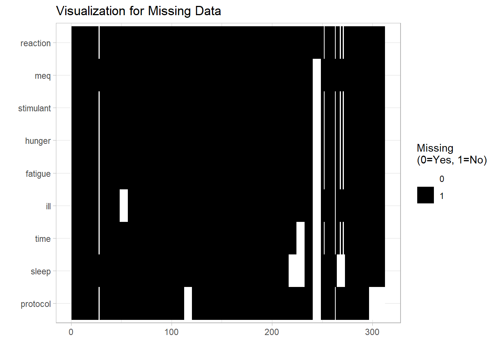
From the plot above, we gain some insights about the missing data:
- One student only recorded reaction time for the eight measurements.
- Some students did not record certain variables at all. (i.e.
protocol,ill,sleep,time) - Some students missed one measurement, and therefore most variables were not available.
- Since these students seemed to forget about recording the data, we can treat these missing data as “Missing Completely At Random” (MCAR)
- Overall, the problem of missing data is not severe.
Dealing with Missing Data
In this analysis, a few approaches are considered:
- Exclude Missing Values:
# Argument to exclude missing values from mathematical operations
na.rm = TRUE
# Subset our data to obtain complete observations
x <- df$meq
x[complete.cases(x), ]
# Omit all rows containing missing values
na.omit()- Advantages: Simplicity, Comparability across analyses
- Disadvantages: Reduces statistical power (because lowers n), Does not use all information, Estimates may be biased if data is not MCAR
- Imputation with mean:
# Recode missing values with the mean
x <- df$fatigue
x[is.na(x)] <- mean(x, na.rm = TRUE)
#OR use Hmisc package for imputation
impute(x, mean) - Advantages: Can use complete case analysis methods
- Disadvantages: Reduces variabilit, Weakens covariance and correlation estimates in the data (because ignores relationship between variables)
Categorical Variables
Barplots for the categorical variables:
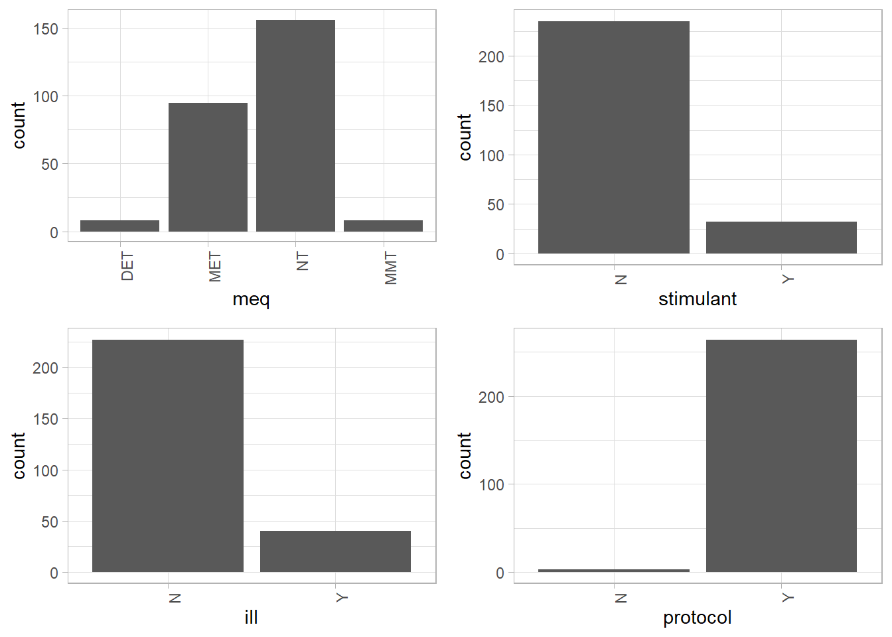
meq: Majority of students belong to neither evening nor morning type of person, followed by moderately evening type.
stimulant: Most students did not consume stimulants before measurements.
ill: Most students were not ill when recording the measurements.
protocol: Almost all students followed protocol when taking each measurement.
Boxplots for the categorical variables:
## Warning: `fun.y` is deprecated. Use `fun` instead.
## Warning: `fun.y` is deprecated. Use `fun` instead.
## Warning: `fun.y` is deprecated. Use `fun` instead.
## Warning: `fun.y` is deprecated. Use `fun` instead.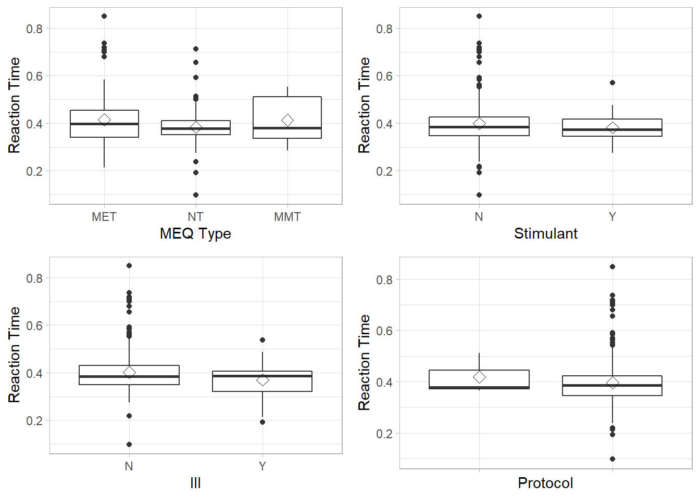
- We can see there are many outliers of reaction time data for students who are of neither type of morning/evening person, did not consume stimulants, were not ill when taking measurements, followed protocol.
- The rhombus box represents the mean of the data for the particular group.
meq: Students with Neither Type have a slightly smaller mean reaction time than other groups. The medians among three groups are almost the same, but they have different distributions. Neither Type’s boxplot is comparatively short, suggests that the reaction time among this group of student do not vary much. (when ignoring the outliers).
stimulant: The medians are almost the same and the size of the box is approximately the same. However, for students who did not consume stimulants, the mean reaction time is slightly higher than those who did have stimulants.
ill: The medians are around the same, so as the size of the boxplot. However, for students who were not ill, the mean reaction time is higher than those who were ill. The boxplot for students who were ill is slight right-skewed.
protocol: The medians are around the same, so as the size of the boxplot. The boxplot for students who did not follow protocols is left-skewed. For students who did not follow the protocol, the mean reaction time is slightly higher than those who followed the protocol.
Numeric Variables
Density plots of the features can show if the variables are skewed. Below are density plots for variables reaction,fatigue,hunger,sleep:
## Warning: Removed 5 rows containing non-finite values (stat_density).## Warning: Removed 13 rows containing non-finite values (stat_density).
## Warning: Removed 13 rows containing non-finite values (stat_density).## Warning: Removed 32 rows containing non-finite values (stat_density).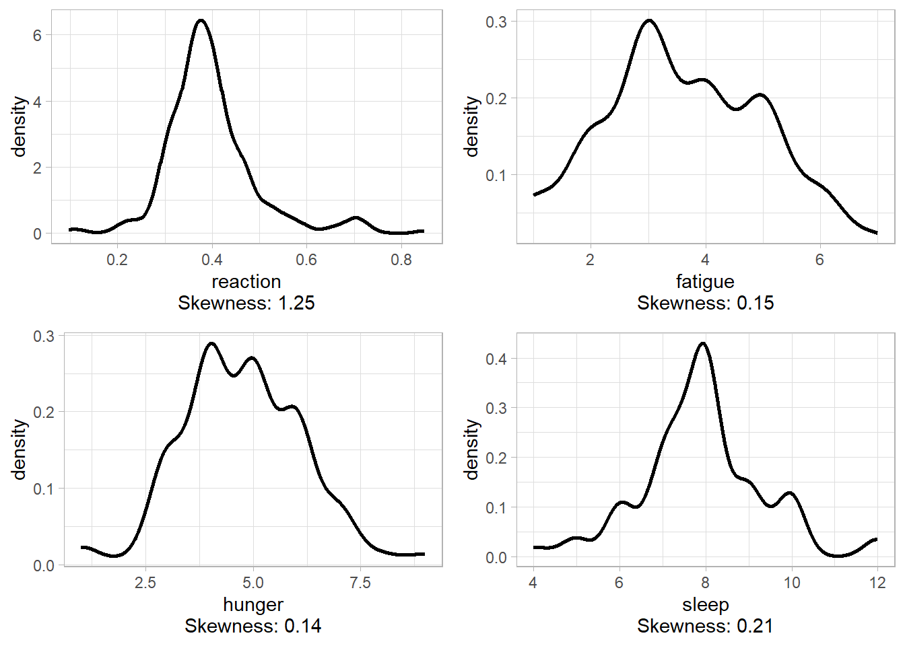
fatigue,hungerare approximately normally-distributed.sleephas very little positive skewness.
reactionis slightly positively skewed, the reaction time peaked approximately at 0.38s
Assessing normality of the reaction by QQ plot:
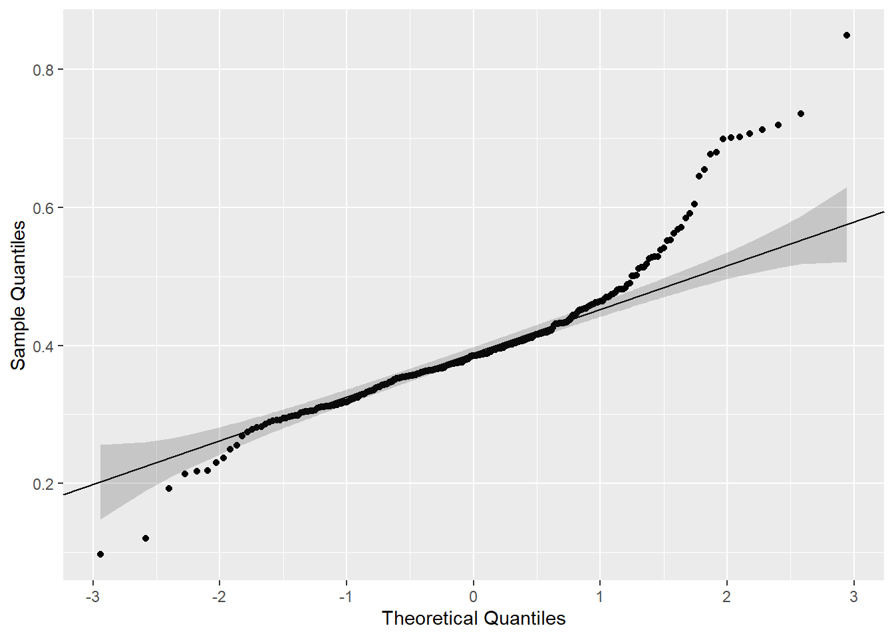
## 25% 75%
## 0.38875000 0.06338124- Noted that the shaded grey region is the confidence interval for
reaction
- From the QQ plot, we observe that there is a heavy tail in the end, some data points deviate from the straight line. This might imply that the
reactiondata did not plausibly come from the theoretical normal distribution.
Normalization of Skewed Variable
The histogram for the response variable reaction shows that it is skewed:
## `stat_bin()` using `bins = 30`. Pick better value with `binwidth`.## Warning: Removed 5 rows containing non-finite values (stat_bin).
Taking the square root of the variable normalizes it:
## `stat_bin()` using `bins = 30`. Pick better value with `binwidth`.## Warning: Removed 5 rows containing non-finite values (stat_bin).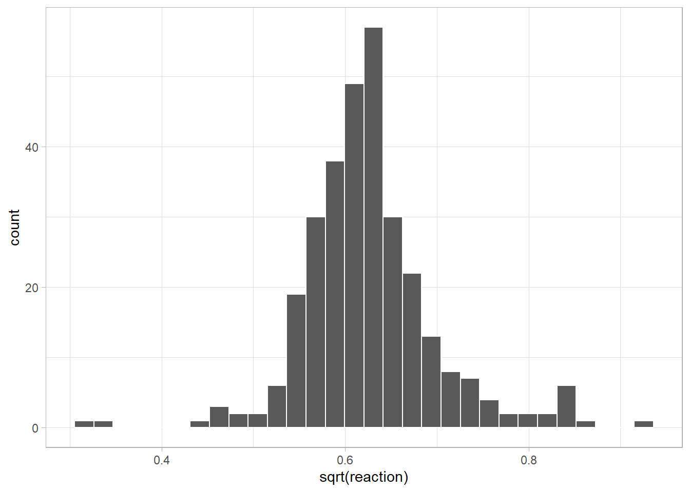
Taking the log of the variable can also induce the same effect as square root:
## `stat_bin()` using `bins = 30`. Pick better value with `binwidth`.## Warning: Removed 5 rows containing non-finite values (stat_bin).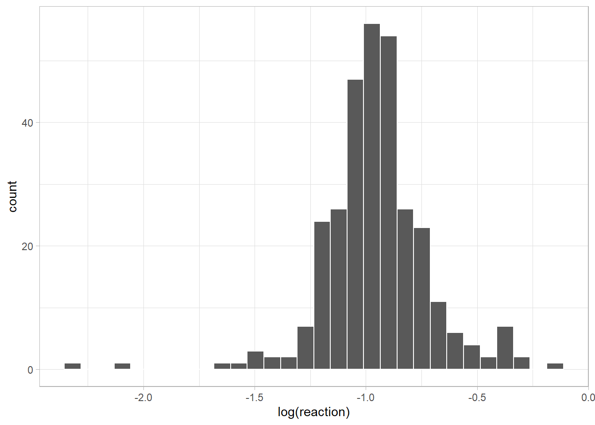
With the two transformations, reaction follows a normal distribution.
Correlation
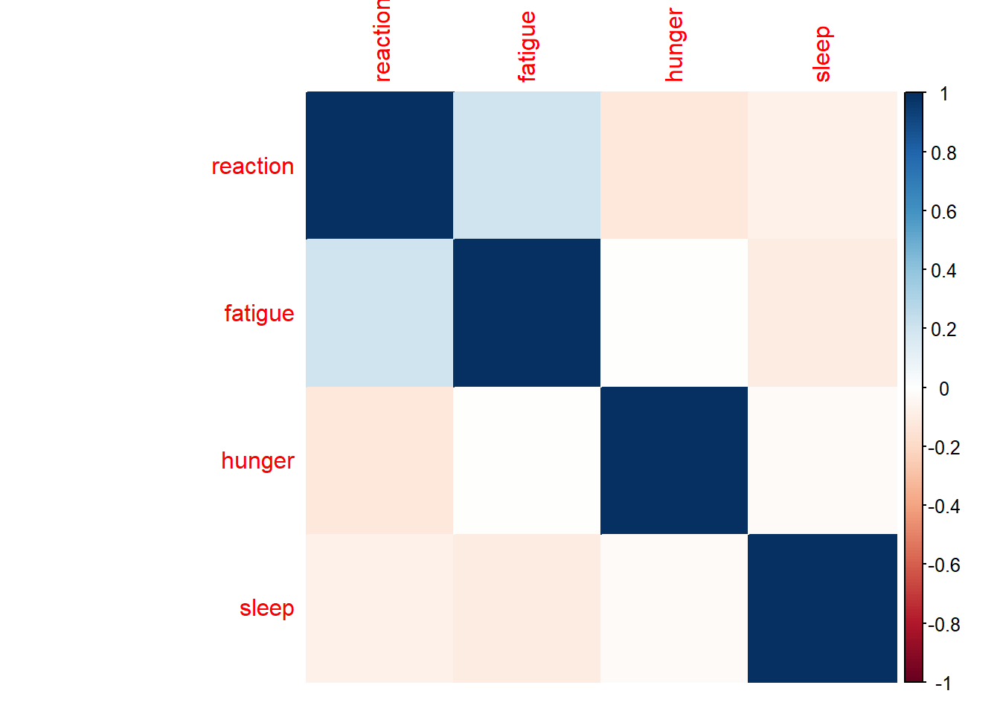
The correlation matrix above shows that:
- Moderate postive correlation between
fatigueandreaction: It seems that students with higher Samn-Perelli Scale (more fatigue) react slower. - Weak negative correlation between
hungerandreaction: Students with higher Hunger Scale (more full) might react faster. - Very weak negative correlation between
fatigueandsleep: When students sleep less, their Samn-Perelli Scale might be higher.
Boxplot for variables that have moderate correlation:
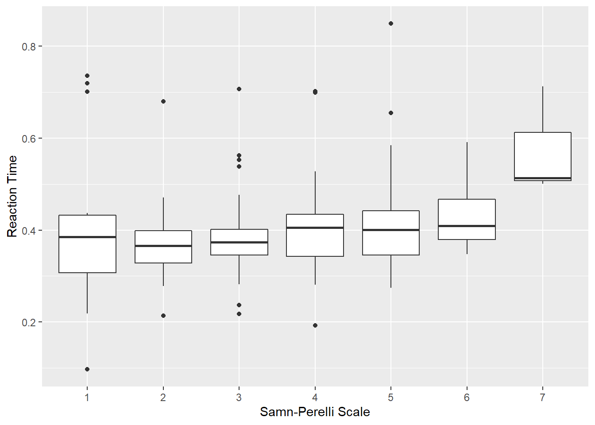
- We can see that as the Samn-Perelli Scale gets larger, the reaction time seems to increase slightly.
- When the Samn-Perelli Scale is 7, the median reaction time is far higher than that of other scales.
“Reaction Time” versus “Time of the Day”
Since time does not belong to either categorical or numeric variable, we treat it as a special case here to extermine the diurnal pattern:
- Noted that the scale of x-axis represents time of the day from 00:00-23:59.
- The line plot does not show the diurnal pattern clearly, we can slightly see that the reaction time tends to be lower during the evening.
- In the LOESS plot, we can definitely see a pattern of reaction time across time. The plot suggests that students might react slowest during early morning (i.e. 03:00-06:00), then the reaction time decreases until evening, they react fastest during the evening (17:00-19:00). The reaction time increases during the night (21:00-23:59).
Comparision Among the MEQ Categories
Since there is only 1 student with Definitely Evening Type and 1 student with Moderately Morning Type of MEQ, it is not worth comparing with the other categories due to the insufficient samples.
Moderately Evening Type vs Neither Type
Let’s compare the diurnal pattern of reaction time for MEQ \(=\) Moderately Evening Type and Neither Type:
## `geom_smooth()` using method = 'loess' and formula 'y ~ x'## Warning: Removed 1 rows containing non-finite values (stat_smooth).## `geom_smooth()` using method = 'loess' and formula 'y ~ x'## Warning: Removed 4 rows containing non-finite values (stat_smooth).## `geom_smooth()` using method = 'loess' and formula 'y ~ x'## Warning: Removed 1 rows containing non-finite values (stat_smooth).## `geom_smooth()` using method = 'loess' and formula 'y ~ x'## Warning: Removed 4 rows containing non-finite values (stat_smooth).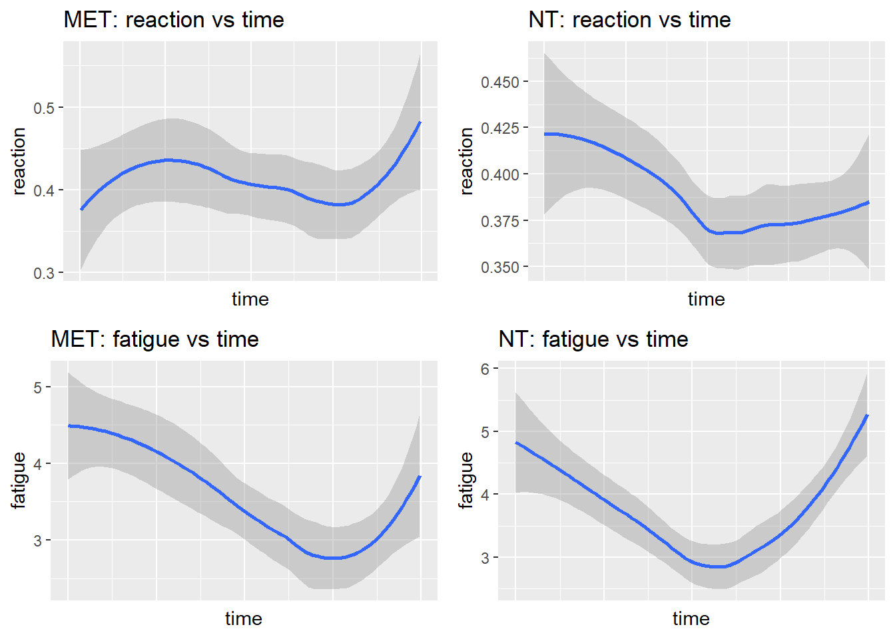
reaction vs time:
- From the LOESS plots above, we can see that the two categories have different diurnal patterns of reaction time.
- Moderately Evening Type
MET: The reaction time increases from 00:00-06:00, then decreases til 18:00, then increases from 18:00 to 23:59. Reaction time is fastest around 18:00-19:00 (evening) and 01:00-03:00(early morning), and slowest during the morning.
- Neither Type
NT: The reaction time decreases from 00:00 to 12:00 (Morning to Noon), then increases from 12:00 to 23:59(Noon to midnight). Reaction time is fastest around 12:00-15:00 (afternoon) and slowest during 00:00-03:00 (early morning).
- Students who are of Neither Type tend to have faster reaction time overall.
- This suggests that the type of MEQ does influence the diurnal pattern of reaction time.
fatigue vs time:
- Moderately Evening Type
MET: Students seem to be most alert around 18:00. This matches with the fastest reaction time around 18:00-19:00 in the “reaction vs time” plot.
- Neither Type
NT: Students seem to be most alert around 12:00-15:00. This matches with the fastest reaction time around 12:00-15:00 in the “reaction vs time” plot.
- This can suggest that lower level of fatigue can contribute to faster eaction time.
Comparision: Busy vs Light
Let’s explore whether the diurnal pattern of reaction time is different on a busy day vs on a light day:
## `geom_smooth()` using method = 'loess' and formula 'y ~ x'## Warning: Removed 10 rows containing non-finite values (stat_smooth).## `geom_smooth()` using method = 'loess' and formula 'y ~ x'## Warning: Removed 11 rows containing non-finite values (stat_smooth).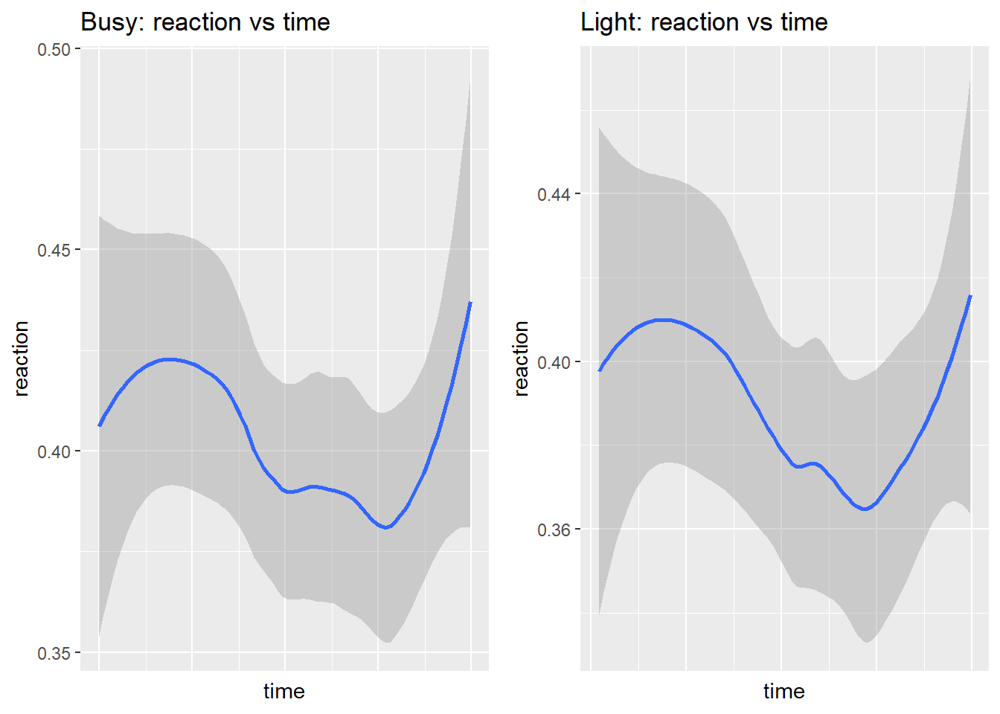
- From the above plots, the diurnal patterns for busy and light day do not seem to be different from each other.
- This suggests that the heaviness of workload does not influence the pattern of reaction time.
Data Analysis
Research Question
What is the diurnal pattern of reaction time?
Dataset
The dataset that we are using for this analysis is Combined Reaction Time Data collected from 39 students. This data is a data frame created for the purpose of determining the diurnal pattern of reaction time.
df <- read.csv(file="C:/Users/miche/OneDrive/Desktop/UofT/STA490/diurnal_pattern.csv", header=TRUE, sep=",")Data Structure
Let’s take a look at the arranged data:
## 'data.frame': 312 obs. of 13 variables:
## $ id : Factor w/ 39 levels "1","2","3","4",..: 1 1 1 1 1 1 1 1 2 2 ...
## $ order : Ord.factor w/ 8 levels "1"<"2"<"3"<"4"<..: 1 2 3 4 5 6 7 8 1 2 ...
## $ reaction : num 0.366 0.31 0.396 0.316 0.437 0.366 0.345 0.415 0.433 0.385 ...
## $ time : Ord.factor w/ 4 levels "Morning"<"Afternoon"<..: 1 2 3 4 1 2 3 4 1 2 ...
## $ fatigue : num 2 3 3 5 4 3 5 6 4 6 ...
## $ hunger : num 4 4 5 3 4 4 4 3 3 5 ...
## $ sleep : num 10 10 10 10 6 6 6 6 8 8 ...
## $ meq : Ord.factor w/ 5 levels "DET"<"MET"<"NT"<..: 3 3 3 3 3 3 3 3 3 3 ...
## $ busy : Factor w/ 2 levels "busy","light": 2 2 2 2 1 1 1 1 2 2 ...
## $ stimulant: Factor w/ 2 levels "N","Y": 1 2 1 1 1 2 1 1 1 1 ...
## $ ill : Factor w/ 2 levels "N","Y": 1 1 1 1 1 1 1 1 1 1 ...
## $ protocol : Factor w/ 2 levels "N","Y": 2 2 2 2 2 1 2 2 2 2 ...
## $ X : Factor w/ 2 levels "","Consumed alcohol": 1 1 1 1 1 1 1 1 1 1 ...## `summarise()` regrouping output by 'time' (override with `.groups` argument)## Warning: Removed 1 rows containing missing values (geom_point).## Warning: Removed 1 row(s) containing missing values (geom_path).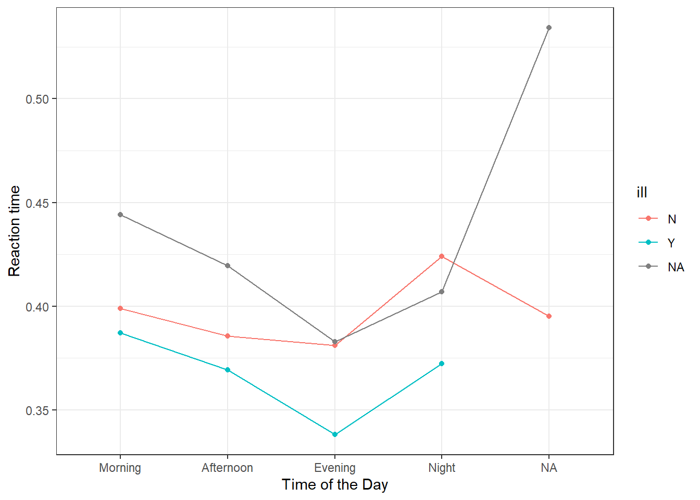
The diurnal pattern data has 312 rows and 12 variables with the target feature reaction as Reaction Time.
12 variables are defined as follows:
id: An ID number given to each student for easy identification
order: The order of measurements
reaction: Reaction time with second as unit
time: Time of the day, that is categorized into Morning, Afternoon, Evening and Night
fatigue: Samn-Perelli 7-point fatigue scale (1: Fully alert - 7: Completely exhausted)
hunger: Hunger Scale 10-point (1: Beyond hungry - 10: Beyond full)
sleep: Hours of sleep before measurements were taken
meq: Morningness-eveningness questionnaire score of the student
busy: Whether the student recorded the measurements on a busy or light day (each student’s busy-ness is self-defined)
stimulant: Whether the student consumed stimulants before taking each measurement (stimulants examples: coke, coffee, tea)
ill: Whether the student was ill when taking the measurements
protocol: Whether the student was following the protocol when recording each measurement
Summary of the Data
## id order reaction time fatigue
## 1 : 8 1 :39 Min. :0.0970 Morning :73 Min. :1.000
## 2 : 8 2 :39 1st Qu.:0.3460 Afternoon:79 1st Qu.:3.000
## 3 : 8 3 :39 Median :0.3850 Evening :73 Median :3.622
## 4 : 8 4 :39 Mean :0.3971 Night :66 Mean :3.622
## 5 : 8 5 :39 3rd Qu.:0.4315 NA's :21 3rd Qu.:5.000
## 6 : 8 6 :39 Max. :0.8490 Max. :7.000
## (Other):264 (Other):78 NA's :5
## hunger sleep meq busy stimulant ill
## Min. :1.000 Min. : 4.000 DET : 8 busy :156 N :262 N :253
## 1st Qu.:4.000 1st Qu.: 7.200 MET :112 light:156 Y : 37 Y : 41
## Median :5.000 Median : 8.000 NT :176 NA's: 13 NA's: 18
## Mean :4.756 Mean : 7.912 MMT : 8
## 3rd Qu.:6.000 3rd Qu.: 8.500 DMT : 0
## Max. :9.000 Max. :12.000 NA's: 8
##
## protocol X
## N : 5 :311
## Y :273 Consumed alcohol: 1
## NA's: 34
##
##
##
## a) Preliminary Mixed-effects Model for Original Data
A Repeated Measures ANOVA for mixed effects model is used. To answer our research question, we need time and reaction to be the main focus when modelling, and show that there is an effect of the time of the day on reaction time. However, time is a tricky variable. When time is numerical, it is hard to show at which time of the day, a student has a better reaction time by fitting into a linear mixed model, so a diurnal pattern of reaction time is even harder to be seen. Therefore, I fit models for data with time as a categorical variable.
Model 1
I first start with the simplest model m1 which inclues the fixed effect time, and the random effect of id. In the case of my model here, we add a random effect for id and this characterizes idiosyncratic variation that is due to individual differences.
Model 1 formulation: \[Y_{ij}=\beta_0+\beta_1 I_{[time=Afternoon],j}+\beta_2 I_{[time=Evening],j}+\beta_3 I_{[time=Night],j} + \epsilon_{ij} + \alpha_i \]
\(Y_{ij}\) = the response for i-th student in j-th observation
\(\beta_0\) = the fixed intercept for the regression model \(\beta_{x_i}\) = the fixed slope for the regression model \(I_{i,j}\) = the categorical predictor for j-th measurement of i-th student \(\epsilon_{ij}\) = Gaussian error term which \(\epsilon_{ij} \sim^{i.i.d} N(0,\sigma_\epsilon^2)\)
\(\alpha_i\) = the random intercepts of (1|id) for the i-th students which \(\alpha_{i} \sim^{i.i.d} N(0,\sigma_\alpha^2)\)
m1 <- lmer(reaction ~ time + (1|id) , data=df)
summary(m1)## Linear mixed model fit by REML. t-tests use Satterthwaite's method [
## lmerModLmerTest]
## Formula: reaction ~ time + (1 | id)
## Data: df
##
## REML criterion at convergence: -696.9
##
## Scaled residuals:
## Min 1Q Median 3Q Max
## -4.0137 -0.4163 -0.0844 0.4274 4.2774
##
## Random effects:
## Groups Name Variance Std.Dev.
## id (Intercept) 0.005335 0.07304
## Residual 0.003513 0.05927
## Number of obs: 291, groups: id, 37
##
## Fixed effects:
## Estimate Std. Error df t value Pr(>|t|)
## (Intercept) 0.393536 0.012504 36.027795 31.473 < 2e-16 ***
## time.L -0.004195 0.007292 253.443744 -0.575 0.56564
## time.Q 0.027047 0.007026 251.798109 3.850 0.00015 ***
## time.C 0.000149 0.006978 252.764195 0.021 0.98298
## ---
## Signif. codes: 0 '***' 0.001 '**' 0.01 '*' 0.05 '.' 0.1 ' ' 1
##
## Correlation of Fixed Effects:
## (Intr) time.L time.Q
## time.L 0.013
## time.Q 0.013 0.030
## time.C -0.004 0.036 0.040anova(m1)## Type III Analysis of Variance Table with Satterthwaite's method
## Sum Sq Mean Sq NumDF DenDF F value Pr(>F)
## time 0.053785 0.017928 3 252.65 5.1036 0.001909 **
## ---
## Signif. codes: 0 '***' 0.001 '**' 0.01 '*' 0.05 '.' 0.1 ' ' 1- From the ANOVA of model 1, we see that the p-value of the F-statistics is smaller than 0.05 (p=0.0019, df=3), there is a strong evidence that
timehas an overall effect onreaction.
- From the summary of model 1, The p-values of the t-statistics for Morning
time(p<0.0001) and Eveningtime(p=0.0002) are statistically significant. This might imply that students tend to have a longer reaction time during the Evening than in the Morning.
Model 2
Here, I consider a model with uncorrelated random effects. To express this, I use two random-effects terms with the same grouping factor id - (1|id) and (0+time|id).
Model 2 formulation: \[Y_{ij}=\beta_0+\beta_1 I_{[time=Afternoon],j}+\beta_2 I_{[time=Evening],j}+\beta_3 I_{[time=Night],j} + \epsilon_{ij} + \alpha_i \]
\(Y_{ij}\) = the response for i-th student in j-th observation
\(\beta_0\) = the fixed intercept for the regression model
\(\beta_{x_i}\) = the fixed slope for the regression model
\(I_{i,j}\) = the categorical predictor for j-th measurement of i-th student
\(\epsilon_{ij}\) = Gaussian error term which \(\epsilon_{ij} \sim^{i.i.d} N(0,\sigma_\epsilon^2)\)
()\(\alpha_i\) = the random intercepts of (1|id) and (0+time|id) for the i-th students which \(\alpha_{i} \sim^{i.i.d} N(0,\sigma_\alpha^2)\)
() Only this component is different from Model 1.
m2 <- lmer(reaction ~ time + (1|id) + (0+time|id) , data=df)## boundary (singular) fit: see ?isSingularsummary(m2)## Linear mixed model fit by REML. t-tests use Satterthwaite's method [
## lmerModLmerTest]
## Formula: reaction ~ time + (1 | id) + (0 + time | id)
## Data: df
##
## REML criterion at convergence: -714
##
## Scaled residuals:
## Min 1Q Median 3Q Max
## -4.2688 -0.4771 -0.0812 0.4628 4.6182
##
## Random effects:
## Groups Name Variance Std.Dev. Corr
## id (Intercept) 0.000000 0.00000
## id.1 timeMorning 0.003520 0.05933
## timeAfternoon 0.004445 0.06667 0.91
## timeEvening 0.007667 0.08756 0.63 0.90
## timeNight 0.007145 0.08453 0.90 1.00 0.90
## Residual 0.002944 0.05426
## Number of obs: 291, groups: id, 37
##
## Fixed effects:
## Estimate Std. Error df t value Pr(>|t|)
## (Intercept) 0.391699 0.012112 35.267745 32.340 < 2e-16 ***
## time.L -0.004854 0.008863 37.808275 -0.548 0.58708
## time.Q 0.026233 0.008322 36.955955 3.152 0.00321 **
## time.C 0.001933 0.007278 55.510802 0.266 0.79151
## ---
## Signif. codes: 0 '***' 0.001 '**' 0.01 '*' 0.05 '.' 0.1 ' ' 1
##
## Correlation of Fixed Effects:
## (Intr) time.L time.Q
## time.L 0.449
## time.Q -0.087 -0.312
## time.C -0.055 -0.203 0.321
## optimizer (nloptwrap) convergence code: 0 (OK)
## boundary (singular) fit: see ?isSingularanova(m2)## Type III Analysis of Variance Table with Satterthwaite's method
## Sum Sq Mean Sq NumDF DenDF F value Pr(>F)
## time 0.031481 0.010494 3 57.836 3.5648 0.01947 *
## ---
## Signif. codes: 0 '***' 0.001 '**' 0.01 '*' 0.05 '.' 0.1 ' ' 1Model 2 produces the similar results as model 1:
- From the ANOVA of model 2, we see that the p-value of the F-statistics is smaller than 0.05 (p=0.0195, df=3), there is a strong evidence that
timehas an overall effect onreaction.
- From the summary of model 2, The p-values of the t-statistics for Morning
time(p<0.001) and Eveningtime(p=0.0032) are statistically significant. This might imply that students tend to have a higher reaction time during the Evening than in the Morning.
Comparing Model 1 vs Model 2
Model 2 contains model 1 in the sense that if the parameter values for model 2 were constrained so as to force the correlation, and hence the covariance, to be zero, and the model were re-fit, we would get model 1. The value 0, to which the correlation is constrained, is not on the boundary of the allowable parameter values. In these circumstances a likelihood ratio test is suitable.
anova(m1,m2)## refitting model(s) with ML (instead of REML)## Data: df
## Models:
## m1: reaction ~ time + (1 | id)
## m2: reaction ~ time + (1 | id) + (0 + time | id)
## npar AIC BIC logLik deviance Chisq Df Pr(>Chisq)
## m1 6 -716.05 -694.01 364.02 -728.05
## m2 16 -712.84 -654.06 372.42 -744.84 16.786 10 0.07924 .
## ---
## Signif. codes: 0 '***' 0.001 '**' 0.01 '*' 0.05 '.' 0.1 ' ' 1Conclusion: The p-value is 1, it means that we would not reject model 1 in favor of model 2, we prefer the more parsimonious model 1. Model 1 is a better fit than model 2. This conclusion is consistent with the AIC (Akaike’s Information Criterion) and the BIC (Bayesian Information Criterion) values for which “smaller is better”.
Model 3
It seems that model 1 is pretty good fit to the data. Now, we add another random effect for meq by id to the previous model 1. Since (meq|id) is equivalent to (1|id) + (0+meq|id), and (1|id) is already in model 1, we would only add the term (0+meq|id) to the model. This random effect characterizes idiosyncratic variation of meq types that is due to individual differences.
The reasons of selecting meq as random effect rather fixed effect:
- Generally speaking, random effect has more levels in reality than actually occuring in the data. Since we do not have all possible levels of the effect
meqin our data while in reality, all our missing levels exist (meq=DET,DMT,MMT). We would setmeqas random effect in this case.
- In the context of Statistics, Bayesians define random effects as sets of variables whose parameter are drawn from the same distribution. Random effects are estimated with partial pooling, while fixed effects are not. Since
meqconsists of five categories, our data shows that almost all subjects fall in only two categories. Whenmeqis a fixed effect, the group effect’s estimate will be based partially on the more abundant data (i.e.meqwith Moderatly Evening and Neither type) from other groups. This could give poor estimates for the low-sample groups (i.e. Definitely Evening, Definitely Morning and Moderately Morning type). Therefore,meqas random effect could resolve the problem.
- In the context of scentific studies, random effects are source of random variation or experimental units (e.g. individuals drawn from a population for a trial) that cannot be directly manipulated by the experimenter and is often unrepeatable. Here,
meqcannot be manipulated and repeatable because it is a fixed characteristic for each subject and themeqtype is unlikely to change in a short period of time.
Model 3 formulation is the same as Model 1/2, except (**)\(\alpha_i\) = the random intercepts of (0+meq|id) and (1|id) for the i-th students which \(\alpha_{i} \sim^{i.i.d} N(0,\sigma_\alpha^2)\)
m3 <- lmer(reaction ~ time + (1|id) + (0+meq|id) , data=df)
summary(m3)## Linear mixed model fit by REML. t-tests use Satterthwaite's method [
## lmerModLmerTest]
## Formula: reaction ~ time + (1 | id) + (0 + meq | id)
## Data: df
##
## REML criterion at convergence: -708.6
##
## Scaled residuals:
## Min 1Q Median 3Q Max
## -4.0994 -0.4273 -0.0911 0.4225 4.2462
##
## Random effects:
## Groups Name Variance Std.Dev. Corr
## id (Intercept) 1.046e-04 0.010229
## id.1 meqMET 1.077e-02 0.103792
## meqNT 1.829e-03 0.042768 -0.28
## meqMMT 8.112e-05 0.009007 0.56 -0.95
## Residual 3.513e-03 0.059269
## Number of obs: 291, groups: id, 37
##
## Fixed effects:
## Estimate Std. Error df t value Pr(>|t|)
## (Intercept) 3.896e-01 9.111e-03 2.030e+01 42.762 < 2e-16 ***
## time.L -4.005e-03 7.288e-03 2.540e+02 -0.550 0.583124
## time.Q 2.717e-02 7.022e-03 2.523e+02 3.868 0.000139 ***
## time.C 6.409e-04 6.965e-03 2.545e+02 0.092 0.926765
## ---
## Signif. codes: 0 '***' 0.001 '**' 0.01 '*' 0.05 '.' 0.1 ' ' 1
##
## Correlation of Fixed Effects:
## (Intr) time.L time.Q
## time.L 0.034
## time.Q 0.011 0.030
## time.C 0.001 0.036 0.040anova(m3)## Type III Analysis of Variance Table with Satterthwaite's method
## Sum Sq Mean Sq NumDF DenDF F value Pr(>F)
## time 0.054128 0.018043 3 253.55 5.1362 0.001827 **
## ---
## Signif. codes: 0 '***' 0.001 '**' 0.01 '*' 0.05 '.' 0.1 ' ' 1- From the ANOVA of model 3, we see that the p-value of the F-statistics is smaller than 0.05 (p=0.0018, df=3), there is a strong evidence that
timehas an overall effect onreaction. Also noted that, the F-statistics of model 3 is slightly larger than model 1. - From the summary of model 3, The p-values of the t-statistics for Morning
time(p<0.001) and Eveningtime(p=0.0001) are statistically significant. This might imply that students tend to have a higher reaction time during the Evening than in the Morning.
Comparing Model 1 vs Model 3
We can compare model 1 and 3 using Likelihood Ratio Test:
anova(m1,m3)## refitting model(s) with ML (instead of REML)## Data: df
## Models:
## m1: reaction ~ time + (1 | id)
## m3: reaction ~ time + (1 | id) + (0 + meq | id)
## npar AIC BIC logLik deviance Chisq Df Pr(>Chisq)
## m1 6 -716.05 -694.01 364.02 -728.05
## m3 12 -716.37 -672.29 370.19 -740.37 12.322 6 0.05515 .
## ---
## Signif. codes: 0 '***' 0.001 '**' 0.01 '*' 0.05 '.' 0.1 ' ' 1Since the p-value for the Likelihood Ratio Test is slightly larger than 0.05 (p=0.0552), we conclude that there is no evidence that model 3 is better than model 1. Therefore, we will keep model 1.
Model 4
We now proceed to adding more fixed effect to model 1 and see if the effect of time on reaction increases more significantly. In this model, we add fatigue,sleep, ill ,hunger,stimulant as fixed effects.
Model 4 formulation: \[Y_{ij}=\beta_0+\beta_1 I_{[time=Afternoon],j}+\beta_2 I_{[time=Evening],j}+\beta_3 I_{[time=Night],j} + \beta_4 I_{[ill=Y],j} + \beta_5 I_{[stimulant=Y],j} +\beta_6 I_{[busy=Y],j}+\beta_7\times fatigue_{i,j} +\beta_8\times sleep_{i,j} + \beta_9\times hunger_{i,j} +\epsilon_{ij} + \alpha_i \]
\(Y_{ij}\) = the response for i-th student in j-th observation
\(\beta_0\) = the fixed intercept for the regression model
\(\beta_{x_i}\) = the fixed slope for the regression model
\(I_{i,j}\) = the categorical predictors for j-th measurement of i-th student
\(X_{i,j}\) = the numerical predictors for j-th measurement of i-th student
\(\epsilon_{ij}\) = Gaussian error term which \(\epsilon_{ij} \sim^{i.i.d} N(0,\sigma_\epsilon^2)\)
(**)\(\alpha_i\) = the random intercepts of (1|id) for the i-th students which \(\alpha_{i} \sim^{i.i.d} N(0,\sigma_\alpha^2)\)
m4 <- lmer(reaction~ time + (1|id) + ill +stimulant +busy + fatigue + sleep + hunger , data=df)
summary(m4)## Linear mixed model fit by REML. t-tests use Satterthwaite's method [
## lmerModLmerTest]
## Formula: reaction ~ time + (1 | id) + ill + stimulant + busy + fatigue +
## sleep + hunger
## Data: df
##
## REML criterion at convergence: -674.1
##
## Scaled residuals:
## Min 1Q Median 3Q Max
## -3.9359 -0.4946 -0.0210 0.3925 4.5581
##
## Random effects:
## Groups Name Variance Std.Dev.
## id (Intercept) 0.005939 0.07706
## Residual 0.002920 0.05404
## Number of obs: 283, groups: id, 36
##
## Fixed effects:
## Estimate Std. Error df t value Pr(>|t|)
## (Intercept) 3.530e-01 3.444e-02 2.654e+02 10.249 < 2e-16 ***
## time.L -2.115e-02 7.514e-03 2.423e+02 -2.814 0.00529 **
## time.Q 1.033e-02 7.085e-03 2.408e+02 1.458 0.14624
## time.C 2.518e-04 6.509e-03 2.399e+02 0.039 0.96918
## illY -4.373e-02 1.734e-02 2.713e+02 -2.523 0.01222 *
## stimulantY -8.190e-03 1.178e-02 2.493e+02 -0.695 0.48743
## busylight -2.037e-03 6.737e-03 2.411e+02 -0.302 0.76267
## fatigue 2.026e-02 2.887e-03 2.492e+02 7.019 2.11e-11 ***
## sleep -3.179e-03 3.273e-03 2.619e+02 -0.971 0.33231
## hunger -6.285e-05 2.747e-03 2.451e+02 -0.023 0.98176
## ---
## Signif. codes: 0 '***' 0.001 '**' 0.01 '*' 0.05 '.' 0.1 ' ' 1
##
## Correlation of Fixed Effects:
## (Intr) time.L time.Q time.C illY stmlnY bsylgh fatigu sleep
## time.L 0.271
## time.Q -0.005 0.071
## time.C -0.019 0.026 0.025
## illY 0.077 0.089 0.056 -0.072
## stimulantY -0.103 0.006 0.118 -0.102 0.047
## busylight -0.010 -0.097 -0.009 0.022 -0.124 0.054
## fatigue -0.424 -0.353 -0.286 0.002 -0.189 0.081 0.135
## sleep -0.768 -0.077 0.003 0.030 -0.070 0.032 -0.201 0.140
## hunger -0.386 -0.261 0.225 0.004 -0.076 0.012 0.076 0.030 -0.006anova(m4)## Type III Analysis of Variance Table with Satterthwaite's method
## Sum Sq Mean Sq NumDF DenDF F value Pr(>F)
## time 0.031209 0.010403 3 240.95 3.5623 0.01491 *
## ill 0.018585 0.018585 1 271.34 6.3642 0.01222 *
## stimulant 0.001412 0.001412 1 249.28 0.4836 0.48743
## busy 0.000267 0.000267 1 241.11 0.0914 0.76267
## fatigue 0.143882 0.143882 1 249.21 49.2698 2.105e-11 ***
## sleep 0.002755 0.002755 1 261.87 0.9434 0.33231
## hunger 0.000002 0.000002 1 245.12 0.0005 0.98176
## ---
## Signif. codes: 0 '***' 0.001 '**' 0.01 '*' 0.05 '.' 0.1 ' ' 1- From the ANOVA of model 4, we see that the p-value of the F-statistics for
timeis smaller than 0.05 (p=0.0149, df=3), there is strong evidence thattimehas an overall effect onreaction.
- The p-value of the F-statistics for
fatigueis smaller than 0.05 (p<0.0001), there is strong evidence thatfatiguehas an effect onreaction. This implies as fatigue level increases, student’s reaction time tends to increase as well.
- The p-value of the F-statistics for
illis smaller than 0.05 (p=0.0122), there is strong evidence thatillhas an effect onreaction. This implies as the student is ill during the measurement, student’s reaction time tends to decrease.
- From the summary of model 4, The p-values of the t-statistics for Morning
time(p<0.0001) and Afternoontime(p=0.0053) are statistically significant. This might imply that students tend to have a shorter reaction time during the Afternoon than in the Morning.
- As we notice that, the overall effect of
timeonreactionbecomes less significant as we add more fixed effects into the model.
- Indeed, we see some variables have effects on reaction time, such as student’s fatigue level and whether the student was ill or not. This model can be an extension to our primary research question, to answer the secondary question: Which factor can influence the reaction time?
Model 5
From model 4, we see that only time, fatigue and ill show significant p-values under F-test. Therefore, we extract these variables and add the random effect (1|id) to form a new model.
Model 5 formulation: \[Y_{ij}=\beta_0+\beta_1 I_{[time=Afternoon],j}+\beta_2 I_{[time=Evening],j}+\beta_3 I_{[time=Night],j} + \beta_4 I_{[ill=Y],j} + \beta_5\times fatigue_{i,j} +\epsilon_{ij} + \alpha_i \]
(*) Notations are the same as Model 4.
m5 <- lmer(reaction~ time + (1|id) + ill + fatigue , data=df)
summary(m5)## Linear mixed model fit by REML. t-tests use Satterthwaite's method [
## lmerModLmerTest]
## Formula: reaction ~ time + (1 | id) + ill + fatigue
## Data: df
##
## REML criterion at convergence: -707.3
##
## Scaled residuals:
## Min 1Q Median 3Q Max
## -3.9120 -0.4781 -0.0124 0.3865 4.5375
##
## Random effects:
## Groups Name Variance Std.Dev.
## id (Intercept) 0.005959 0.07719
## Residual 0.002890 0.05376
## Number of obs: 283, groups: id, 36
##
## Fixed effects:
## Estimate Std. Error df t value Pr(>|t|)
## (Intercept) 3.230e-01 1.664e-02 8.136e+01 19.412 < 2e-16 ***
## time.L -2.207e-02 7.155e-03 2.453e+02 -3.085 0.00227 **
## time.Q 1.082e-02 6.814e-03 2.442e+02 1.588 0.11355
## time.C 9.953e-05 6.435e-03 2.435e+02 0.015 0.98767
## illY -4.554e-02 1.698e-02 2.757e+02 -2.682 0.00777 **
## fatigue 2.103e-02 2.797e-03 2.513e+02 7.519 9.74e-13 ***
## ---
## Signif. codes: 0 '***' 0.001 '**' 0.01 '*' 0.05 '.' 0.1 ' ' 1
##
## Correlation of Fixed Effects:
## (Intr) time.L time.Q time.C illY
## time.L 0.210
## time.Q 0.192 0.136
## time.C 0.006 0.036 0.039
## illY -0.044 0.053 0.066 -0.061
## fatigue -0.587 -0.343 -0.315 0.000 -0.165anova(m5)## Type III Analysis of Variance Table with Satterthwaite's method
## Sum Sq Mean Sq NumDF DenDF F value Pr(>F)
## time 0.039376 0.013125 3 244.19 4.5412 0.004061 **
## ill 0.020783 0.020783 1 275.70 7.1907 0.007770 **
## fatigue 0.163412 0.163412 1 251.30 56.5384 9.739e-13 ***
## ---
## Signif. codes: 0 '***' 0.001 '**' 0.01 '*' 0.05 '.' 0.1 ' ' 1- From the ANOVA of model 4, we see that the p-value of the F-statistics for
timeis smaller than 0.05 (p=0.0041, df=3), there is strong evidence thattimehas an overall effect onreaction.
- The p-value of the F-statistics for
fatigueis smaller than 0.05 (p<0.0001), there is strong evidence thatfatiguehas an effect onreaction. This implies as fatigue level increases, student’s reaction time tends to increase as well.
- The p-value of the F-statistics for
illis smaller than 0.05 (p=0.0078), there is strong evidence thatillhas an effect onreaction. This implies as the student is ill during the measurement, student’s reaction time tends to decrease.
- From the summary of model 4, The p-values of the t-statistics for Morning
time(p<0.0001) and Afternoontime(p=0.0053) are statistically significant. This might imply that students tend to have a shorter reaction time during the Afternoon than in the Morning.
- As we notice that, the overall effect of
timeonreactionbecomes more significant than that in model 4.
Comparing Model 4 vs Model 5
We can compare model 4 and 5 using Likelihood Ratio Test:
anova(m4,m5)## refitting model(s) with ML (instead of REML)## Data: df
## Models:
## m5: reaction ~ time + (1 | id) + ill + fatigue
## m4: reaction ~ time + (1 | id) + ill + stimulant + busy + fatigue +
## m4: sleep + hunger
## npar AIC BIC logLik deviance Chisq Df Pr(>Chisq)
## m5 8 -739.10 -709.93 377.55 -755.10
## m4 12 -732.75 -689.01 378.38 -756.75 1.6573 4 0.7985Conclusion: The p-value of the Likelihood Ratio test is so much larger than 0.05 (p=0.7985), there is no evidence that model 4 is better fit than model 5. Hence, we keep model 5.
Comparing Model 1 vs Model 5
- Model has AIC of -739.10 and BIC of -709.93
- Model 1 has AIC of -714.84 and BIC of -659.74
- Model 5 will be better fit than model 1 because model 5 has a smaller AIC and BIC values than model 1.
Model 6
outliers <- boxplot(df$reaction, plot=FALSE)$out
df[which(df$reaction %in% outliers),]## id order reaction time fatigue hunger sleep meq busy
## 57 8 1 0.707 Afternoon 3.000000 4.000000 8.000000 MET light
## 58 8 2 0.736 Evening 1.000000 4.000000 8.000000 MET light
## 59 8 3 0.701 Night 1.000000 4.000000 8.000000 MET light
## 60 8 4 0.702 Night 4.000000 5.000000 8.000000 MET light
## 61 8 5 0.699 Afternoon 4.000000 5.000000 8.000000 MET busy
## 62 8 6 0.680 Evening 2.000000 4.000000 8.000000 MET busy
## 63 8 7 0.719 Night 1.000000 3.000000 8.000000 MET busy
## 64 8 8 0.849 Night 5.000000 4.000000 8.000000 MET busy
## 67 9 3 0.193 Evening 4.000000 7.000000 8.000000 NT light
## 92 12 4 0.214 Night 2.000000 5.000000 8.500000 MET light
## 114 15 2 0.677 Afternoon 4.000000 7.000000 10.000000 MET light
## 117 15 5 0.568 Morning 5.000000 3.000000 8.000000 MET busy
## 130 17 2 0.097 Afternoon 1.000000 6.000000 8.000000 NT light
## 143 18 7 0.584 Evening 5.000000 7.000000 7.300000 MET busy
## 144 18 8 0.571 Night 6.000000 7.000000 7.300000 MET busy
## 195 25 3 0.712 Evening 7.000000 3.000000 6.000000 NT light
## 200 25 8 0.591 Night 6.000000 6.000000 8.500000 NT busy
## 209 27 1 0.562 Morning 3.000000 3.000000 10.000000 MET light
## 240 30 8 0.655 Night 5.000000 4.000000 7.000000 NT busy
## 244 31 4 0.645 <NA> 3.622074 4.755853 7.912429 <NA> light
## 248 31 8 0.605 <NA> 3.622074 4.755853 7.912429 <NA> busy
## 267 34 3 0.120 Evening 2.000000 4.000000 7.912429 NT light
## stimulant ill protocol X
## 57 N N Y
## 58 N N Y
## 59 N N Y
## 60 N N Y
## 61 N N Y
## 62 N N Y
## 63 N N Y
## 64 N N Y
## 67 N Y Y
## 92 N Y Y
## 114 N N <NA>
## 117 N N <NA>
## 130 N N Y
## 143 N N Y
## 144 Y N Y
## 195 N N Y
## 200 N N Y
## 209 N N Y
## 240 N N Y
## 244 <NA> <NA> <NA>
## 248 <NA> <NA> <NA>
## 267 N N Ydf <- df[-which(df$reaction %in% outliers),]
df <- df[-173]
m6 <- lmer(reaction~time+(1|id)+ill+fatigue, data=df)
summary(m6)## Linear mixed model fit by REML. t-tests use Satterthwaite's method [
## lmerModLmerTest]
## Formula: reaction ~ time + (1 | id) + ill + fatigue
## Data: df
##
## REML criterion at convergence: -806.4
##
## Scaled residuals:
## Min 1Q Median 3Q Max
## -4.1206 -0.5568 -0.0427 0.4919 3.1323
##
## Random effects:
## Groups Name Variance Std.Dev.
## id (Intercept) 0.001873 0.04328
## Residual 0.001711 0.04136
## Number of obs: 263, groups: id, 35
##
## Fixed effects:
## Estimate Std. Error df t value Pr(>|t|)
## (Intercept) 3.311e-01 1.140e-02 1.225e+02 29.045 < 2e-16 ***
## time.L -1.955e-02 5.752e-03 2.261e+02 -3.399 0.00080 ***
## time.Q 9.973e-03 5.491e-03 2.251e+02 1.816 0.07068 .
## time.C 7.263e-04 5.163e-03 2.246e+02 0.141 0.88827
## illY -3.960e-02 1.270e-02 2.277e+02 -3.117 0.00206 **
## fatigue 1.513e-02 2.306e-03 2.355e+02 6.562 3.34e-10 ***
## ---
## Signif. codes: 0 '***' 0.001 '**' 0.01 '*' 0.05 '.' 0.1 ' ' 1
##
## Correlation of Fixed Effects:
## (Intr) time.L time.Q time.C illY
## time.L 0.278
## time.Q 0.248 0.171
## time.C 0.017 0.037 0.068
## illY -0.046 0.064 0.065 -0.061
## fatigue -0.715 -0.361 -0.333 -0.013 -0.158anova(m6)## Type III Analysis of Variance Table with Satterthwaite's method
## Sum Sq Mean Sq NumDF DenDF F value Pr(>F)
## time 0.029925 0.009975 3 225.07 5.8302 0.0007475 ***
## ill 0.016624 0.016624 1 227.65 9.7166 0.0020613 **
## fatigue 0.073672 0.073672 1 235.53 43.0604 3.342e-10 ***
## ---
## Signif. codes: 0 '***' 0.001 '**' 0.01 '*' 0.05 '.' 0.1 ' ' 1emmeans(m6, list(pairwise~time), adjust = 'tukey')## $`emmeans of time`
## time emmean SE df lower.CL upper.CL
## Morning 0.384 0.01000 74.3 0.364 0.404
## Afternoon 0.366 0.00978 70.6 0.346 0.385
## Evening 0.356 0.01015 79.6 0.336 0.376
## Night 0.358 0.01075 93.3 0.337 0.379
##
## Results are averaged over the levels of: ill
## Degrees-of-freedom method: kenward-roger
## Confidence level used: 0.95
##
## $`pairwise differences of time`
## 1 estimate SE df t.ratio p.value
## Morning - Afternoon 0.01807 0.00712 225 2.537 0.0571
## Morning - Evening 0.02778 0.00729 225 3.811 0.0010
## Morning - Night 0.02590 0.00814 227 3.182 0.0090
## Afternoon - Evening 0.00972 0.00730 226 1.331 0.5444
## Afternoon - Night 0.00784 0.00831 228 0.943 0.7819
## Evening - Night -0.00188 0.00821 227 -0.229 0.9958
##
## Results are averaged over the levels of: ill
## Degrees-of-freedom method: kenward-roger
## P value adjustment: tukey method for comparing a family of 4 estimatesFinal Model
Model 5 is chosen. The model shows there is an overall effect of the time of the day on reaction time. From this model, we cansee at which time, the reaction time is shorter than the other.
Model 5 formulation: \[Y_{ij}=\beta_0+\beta_1 I_{[time=Afternoon],j}+\beta_2 I_{[time=Evening],j}+\beta_3 I_{[time=Night],j} + \beta_4 I_{[ill=Y],j} + \beta_5\times fatigue_{i,j} +\epsilon_{ij} + \alpha_i \]
From ANOVA of model 5, we see a significance in the overall effect of time on reaction, then we would perform a pairwise comparison (Tukey’s HSD: Honestly Significant Difference test) with the categories under time variables:
emmeans(m5, list(pairwise ~ time), adjust = "tukey")## $`emmeans of time`
## time emmean SE df lower.CL upper.CL
## Morning 0.396 0.0157 62.3 0.365 0.428
## Afternoon 0.376 0.0154 58.7 0.345 0.406
## Evening 0.366 0.0157 63.0 0.334 0.397
## Night 0.367 0.0162 70.0 0.334 0.399
##
## Results are averaged over the levels of: ill
## Degrees-of-freedom method: kenward-roger
## Confidence level used: 0.95
##
## $`pairwise differences of time`
## 1 estimate SE df t.ratio p.value
## Morning - Afternoon 0.02060 0.00906 243 2.273 0.1073
## Morning - Evening 0.03061 0.00917 243 3.339 0.0054
## Morning - Night 0.02957 0.01012 245 2.921 0.0198
## Afternoon - Evening 0.01000 0.00910 243 1.099 0.6904
## Afternoon - Night 0.00896 0.01024 245 0.875 0.8176
## Evening - Night -0.00104 0.01001 245 -0.104 0.9996
##
## Results are averaged over the levels of: ill
## Degrees-of-freedom method: kenward-roger
## P value adjustment: tukey method for comparing a family of 4 estimatesThis output indicates that the differences Morning-Evening and Morning-Night are significant , while other time pairs are not significant. The reaction times for Morning and Afternoon; Afternoon and Evening; Afternoon and Night; Evening and Night do not differ among the pairs themselves. In general, students react faster in the Evening compared to the Morning, students also react faster at Night than in the Morning.
From the model (summary(m5)), the mean reaction times for Morning, Afternoon, Evening and Night are 0.323, 0.301, 0.333 and 0.277 respectively. Judging by the mean reaction time from the model, we can observe that students react fastest at Night.
Model Diagnostics
Assessing the Linearity Fit
Models are assumed to be linear in each of the independent variables: Since ill is binary variable, linearity is satisfied automatically.
In our EDA, we can see from the plot that as fatigue increases, reaction time seems to increase as well, there is a linear relationship between fatigue and reaction. Since time is similar to the order of measurements, linearity exists.
Underlying Assumptions: Normality of Residuals
qqnorm(residuals(m5))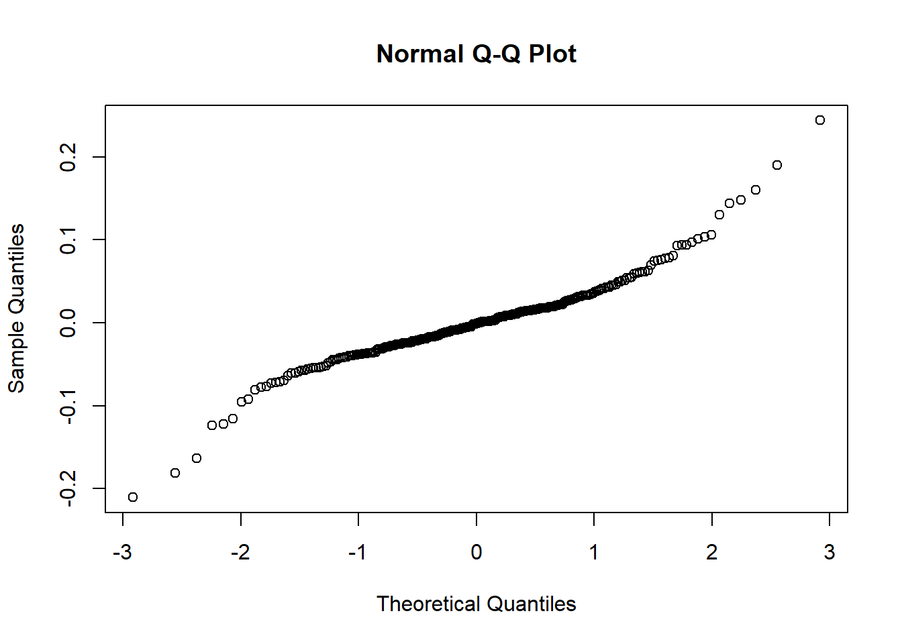 The QQ plot shows there are short left and right tails, there might be some concerns with normality of residuals due to significant deviations from linearity of the observations.
Underlying Assumptions: Constant Variance
plot(m5)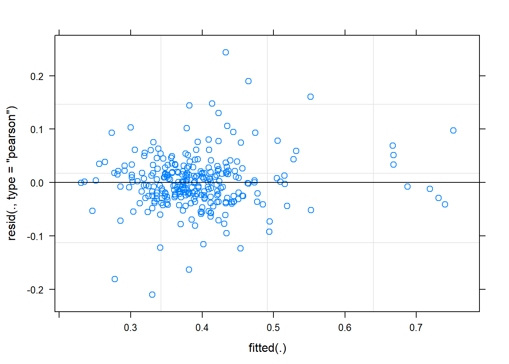
This residual plot does not indicate any deviations from a linear form. It also shows relatively constant variance across the fitted range. The slight reduction in apparent variance on the right of the graph is likely a result of there being fewer observation in these predicted areas. Teh assumption is satisfied.
Assumptions for Random Effects
The random effects assumption is that the individual specific effects are uncorrelated with the independent variables. Here, id is a sample drwan from a population, the individual difference within a subject is uncorrelated with time.